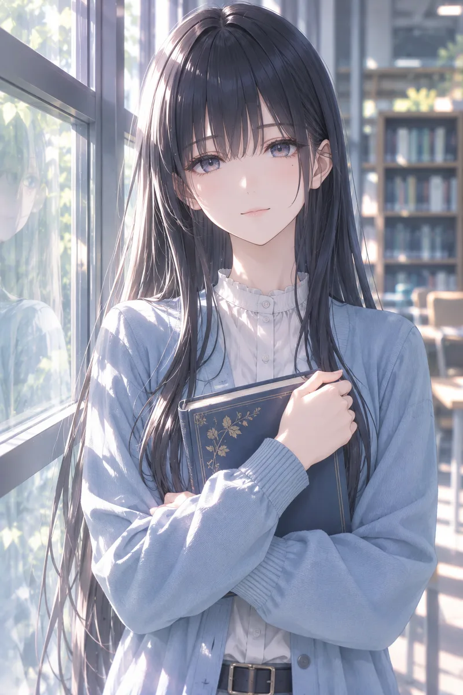
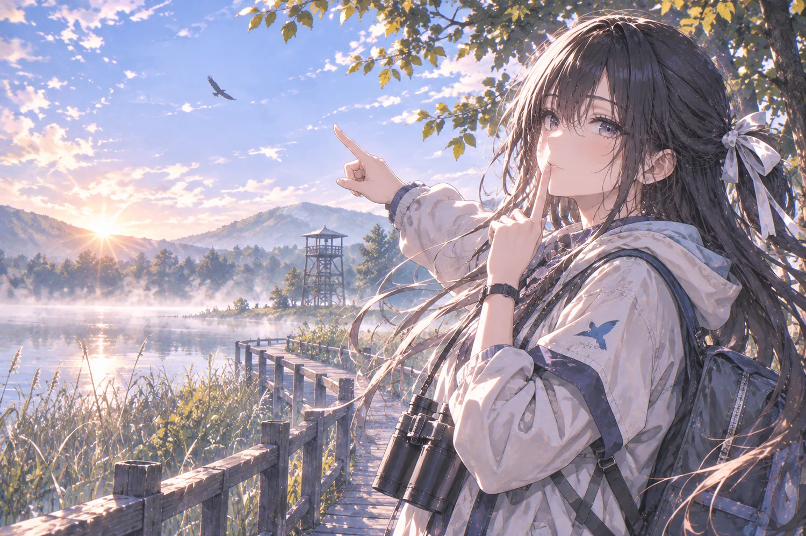
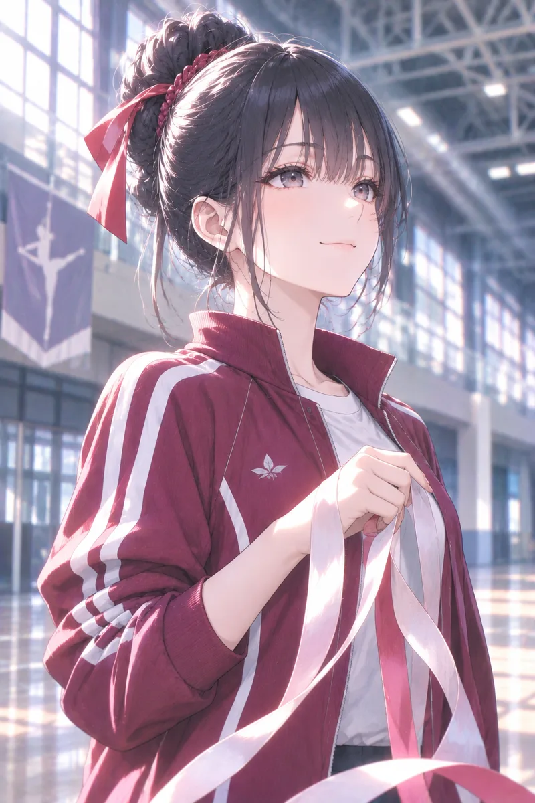
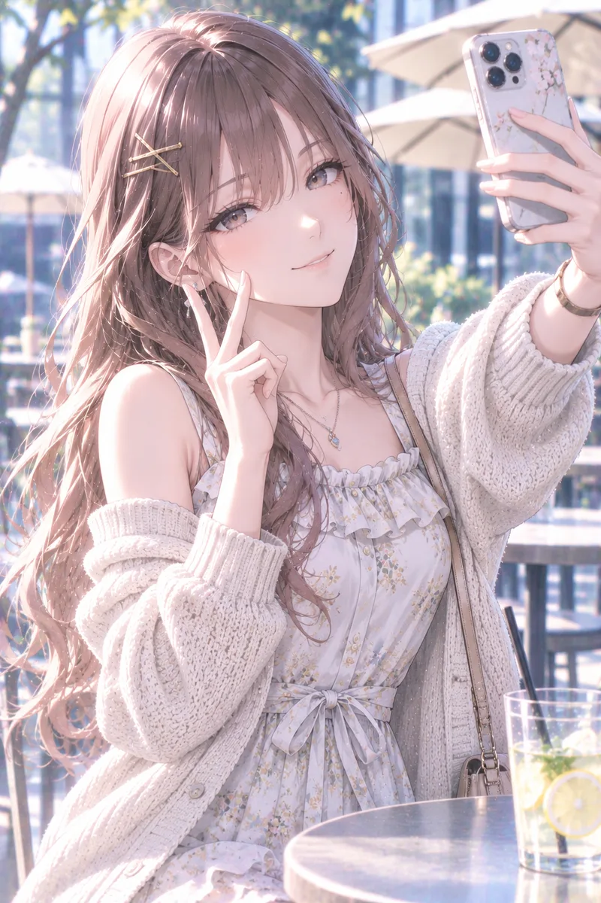
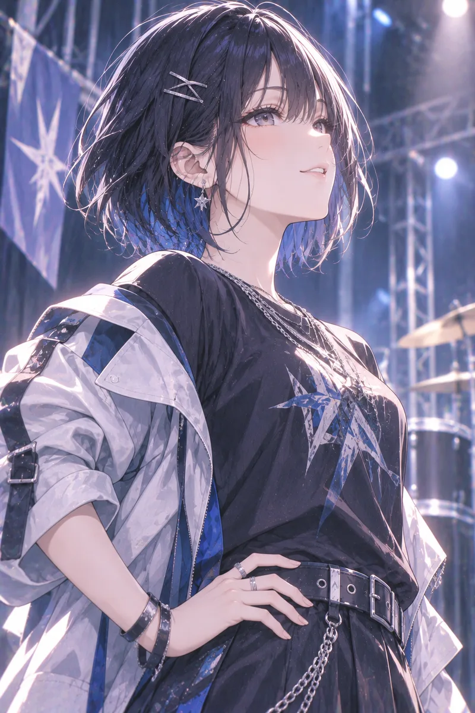
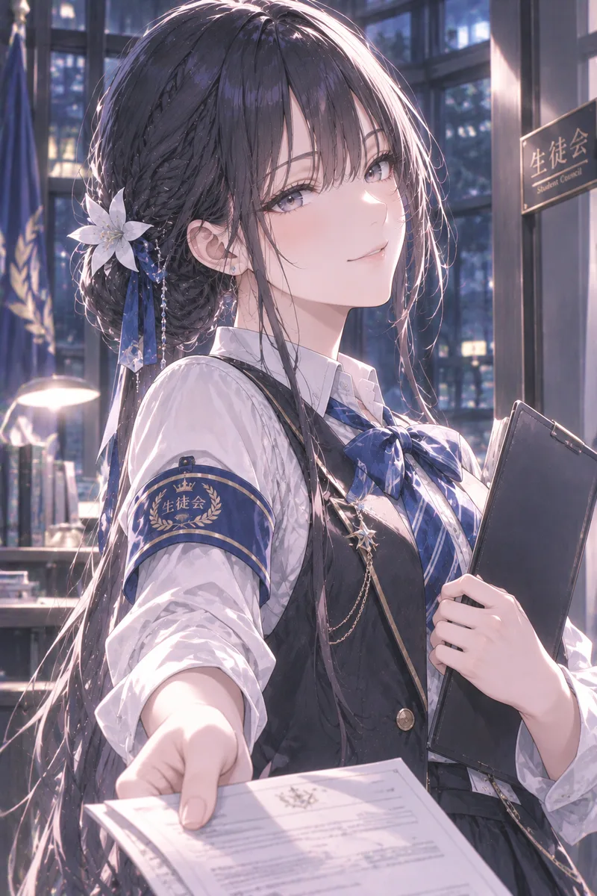
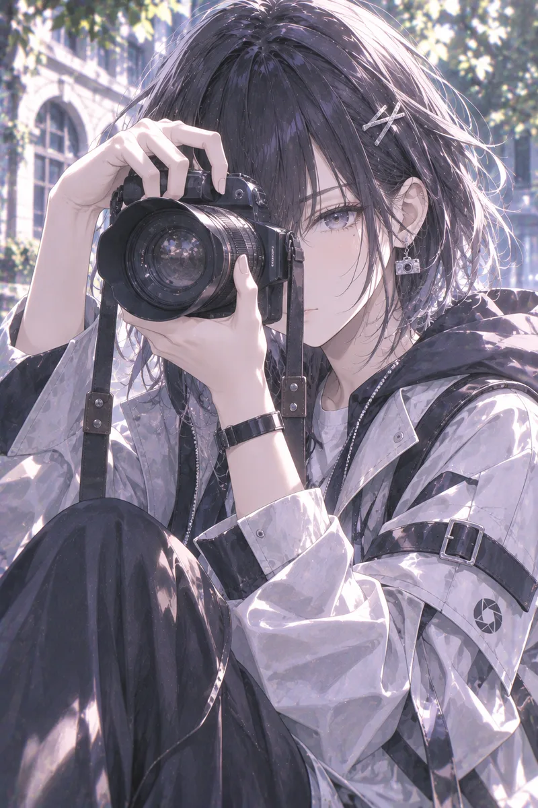
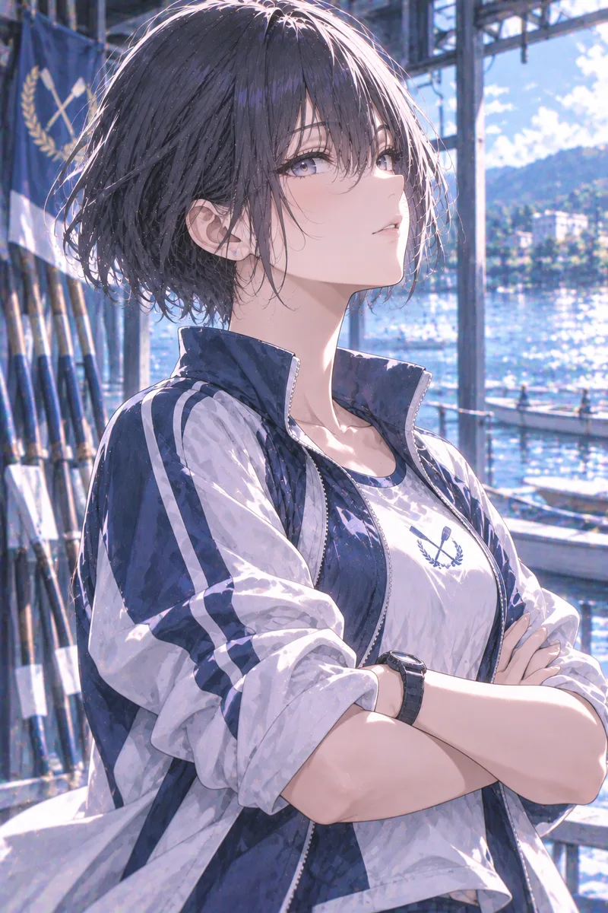
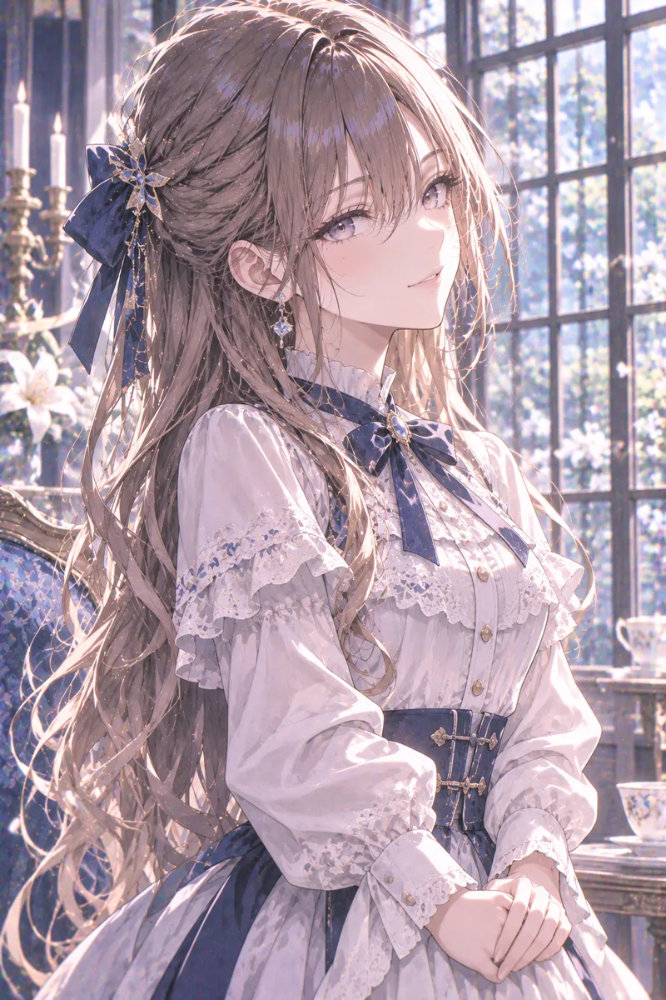
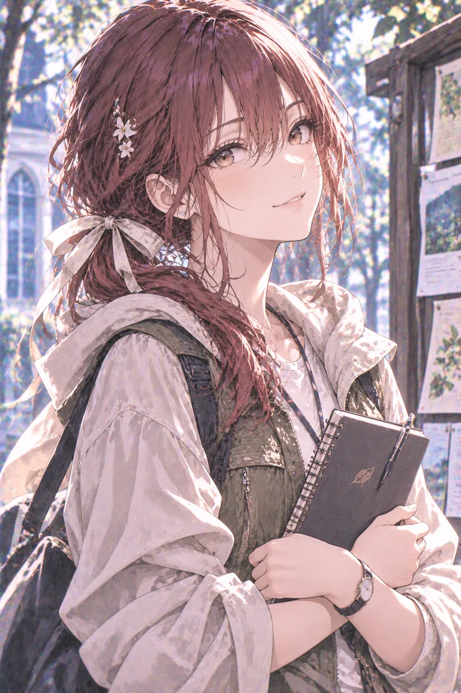

紬
文学部一の「高嶺の花」、ゼミの共同研究相手
学部で名前を知らない人はいない人。誰にでも、完璧な微笑みを返します。ゼミでペアになった主人公は、図書館の奥で、一人で文庫本に向かう彼女の、別の顔を見てしまいます。
エンドカードの鳥:コハクチョウ

「シーッ」の朝に、鳥を探す。
『高嶺の鳥、見つけに行こう』は、選択肢を選びながら読み進める、インタラクティブノベルです。舞台は、現代の日本の大学。学内で名前を知らない人はいない、「高嶺の花」と呼ばれる9人の女性が登場します。
主人公は、ゼミや実習の班で彼女たちと同じになり、「完璧ではない一瞬」に居合わせてしまいます。図書館で本に向かう顔、夜の体育館で漏れた訛り、船の上での青い顔。見てしまったからには、見なかったことにはできません。そこで主人公は、早朝の野鳥観察に、彼女を誘います。
鳥観察は、声をひそめて、静かに待つ遊びです。鳥は、驚かせると、逃げてしまう。人も同じです。そっと、距離を測りながら近づいていく時間を、ゆっくり読んでもらえるように作りました。物語の中では、鳥は文章だけで語られます。その朝に出会った鳥が一枚の絵として現れるのは、エンディングの最後だけ。読み終えた人だけが見られる絵が、野鳥図鑑のギャラリーに残っていきます。
最初に選べるのは、紬、舞、雫、凪、千夜、冴、凛、稲穂の8人です。茜は、物語を読み進めると現れます。キャラクターの絵は、最初の場面で出てくる姿です。みんなが知っている、完璧な彼女の顔を描いています。

文学部一の「高嶺の花」、ゼミの共同研究相手
学部で名前を知らない人はいない人。誰にでも、完璧な微笑みを返します。ゼミでペアになった主人公は、図書館の奥で、一人で文庫本に向かう彼女の、別の顔を見てしまいます。
エンドカードの鳥:コハクチョウ

新体操部のエース、「舞姫」
標準語も、立ち居振る舞いも、完璧な人。夜の体育館で、誰も見ていないと思って口にした一言から、物語が始まります。
エンドカードの鳥:タンチョウ

ミスコン優勝の看板娘、「完璧アイコン」
SNSでも、いつも一番きれいな自分を見せている人。登山実習の班で、写真には絶対に写らない姿に出会います。
エンドカードの鳥:ホシガラス

軽音部のボーカル、「歌姫」
ステージの上では、物怖じしない堂々とした人。実習船の上で、その印象とは正反対の姿を見せます。
エンドカードの鳥:アホウドリ

生徒会長、「不夜城」
深夜まで明かりが消えない生徒会室の主。完璧な仕事ぶりの裏にある、本音を預けられる相手を探す物語です。
エンドカードの鳥:フクロウ

写真部のエース、「寡黙な天才」
誰とも群れず、一人でカメラを構える人。レンズの外では言葉に詰まってしまう素顔と、少しずつ、言葉を交わしていきます。
エンドカードの鳥:ミコアイサ

漕艇部のキャプテン、「一番涼しい顔をした人」
どんな大会でも表情を崩さない人。負けた日の夕方、桟橋の隅で見た姿が、二人の距離を変えていきます。
エンドカードの鳥:オシドリ

名家のお嬢様、「箱入り娘」
完璧なマナーの中で育った、深窓の令嬢。農業体験の畦道で見せた、思いがけないはしゃぎ方から、物語が動き出します。
エンドカードの鳥:コウノトリ

環境保全サークルの代表、「調整役」
誰の相談にも乗るのに、自分のことは話さない人。「頼られる側」が、誰かに頼るようになるまでの物語です。
エンドカードの鳥:トキ
作中に出てくる鳥は、すべて実在するものです。エンドカードになる9種を、図鑑のデータからまとめました。実際に観察に出かけるときは、ごく簡単な心がまえも、あわせて書いておきます。
| 鳥 | 特徴 |
|---|---|
| コハクチョウ | 冬鳥です。10月中旬ごろにシベリア方面から飛来し、翌春まで越冬します。新潟や島根など、各地の湖が越冬地として知られています。 |
| タンチョウ | 北海道東部、釧路湿原を中心に暮らす留鳥です。冬は、給餌場の近くに群れで集まります。国の特別天然記念物です。 |
| ホシガラス | 亜高山帯から高山帯の、ハイマツ帯や針葉樹林で見られる留鳥です。日本の高山帯を代表するカラスの仲間です。 |
| アホウドリ | 伊豆諸島の鳥島など、限られた離島の断崖で繁殖します。かつて乱獲でほぼ絶滅したとされた、国の特別天然記念物です。 |
| フクロウ | 平地から山地の森林で、一年中同じ縄張りに暮らします。大木の洞を巣にします。日本人にとって、いちばん馴染み深いフクロウの仲間です。 |
| ミコアイサ | 冬鳥です。湖沼や河川、公園の池で見られます。白と黒の姿から、「パンダガモ」の愛称で知られています。 |
| オシドリ | 山地の湖沼や渓流にすみ、繁殖期は樹洞に営巣します。越冬期には、集団で見られることが多い鳥です。 |
| コウノトリ | 水田や湿地で見られます。一度は日本国内で野生絶滅しましたが、豊岡市などで野生復帰の取り組みが進んでいます。国の特別天然記念物です。 |
| トキ | 新潟県の佐渡島を中心に、水田や里山で見られます。日本産の個体はいったん絶滅し、野生復帰事業により、今は再び暮らしています。国の特別天然記念物です。 |
・静かに、遠くから。鳥に近づきすぎないように。双眼鏡があると、距離をとったまま観察できます。
・巣や雛には、近づかない。繁殖期は、特に気をつけてください。
・餌をやらない、追い立てない。写真を撮るために、鳥を動かそうとしないでください。
・天然記念物や、保護されている種もいます。観察の場所の決まりを守って、足元と気温にも気をつけてください。
人物との関係は、幸福度に応じて5段階の「絆ランク」で表されます。ランクが上がるたびに、画面の背景色も少しずつ変わっていきます。
| ランク | 目安 |
|---|---|
| 警戒 | 最初の状態 |
| 顔見知り | 50ポイント以上 |
| 友達 | 100ポイント以上 |
| 親友 | 180ポイント以上 |
| 唯一無二の相棒 | 250ポイント以上。特別な結末が見られる |
茜は、最初は選べません。「累計の幸福度を貯める」か、「ここまでの8人を、1ルートずつ読み終える」と現れます。
・この作品は、フィクションです。登場する人物、団体、大学は、すべて架空のものです。
・作中のイラストは、画像生成AIを使って制作し、作者が選定・調整しています。BGMは、AI音楽生成サービス「Suno AI」で制作しています。
・物語には、人前では完璧に振る舞う人の、弱さや悔しさの描写が少しあります。刺激的な表現は含みません。
・保存データは、お使いのブラウザの中にだけ保存されます。ブラウザの閲覧データを消去したり、別の端末で開いたりすると、記録は引き継がれません。
はい、すべて無料です。登録やログインも要りません。
はい、スマホでの操作を中心に作っています。タップだけで進められます。パソコンのブラウザでも遊べます。
最初に選べる8人の中から、気になる人を選んでください。順番は自由です。
9人全員に、1枚ずつ、エンドカードがあります。どちらのルートでも、エンディングで見られます。
画面右上のスピーカーボタンで、オン・オフを切り替えられます。ブラウザの設定によっては、最初のタップのあとに音が流れ始めます。
9人全員の、ルートAとルートBをどちらも読み終えると、キャラクター選択画面に特別編が現れます。
エンディングを見るたびに、自動でセーブされます。キャラクター選択画面の下のほうに、セーブデータをリセットするボタンがあります。